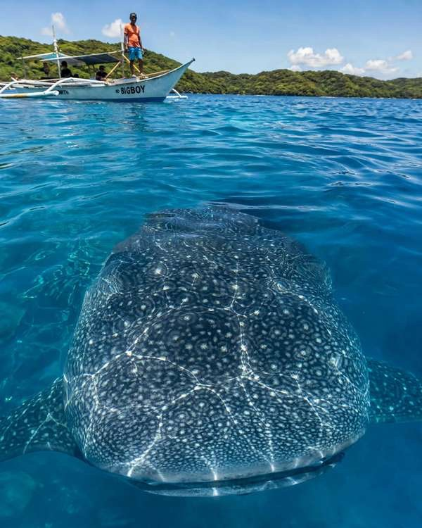

Two places in the Philippines sell the same animal and two very different mornings. Oslob, on the southern tip of Cebu, runs a daily, fed encounter a few metres from shore. Donsol, in Sorsogon at the southern edge of Luzon, depends on whale sharks drifting into its bay on their own and on a boat crew finding them.
If you only want the short answer: pick Oslob when you are based in Cebu, have one spare morning and want the best odds of a swim. Pick Donsol when you can spare three days between March and May and would rather have a no-feeding encounter than a near-certain one. The rest of this guide covers what each costs, how to reach them and where each one falls short.
A word on "guaranteed", because Oslob is often sold that way. Sightings there depend on the animals turning up too. In late May 2026 they stayed away for about four days, and on one morning the interaction area closed at 8 AM after scouts found none, then reopened when two sharks arrived an hour later. Near-certain is fair. Certain is not.

How the two encounters work
At Oslob, you register at Tan-awan, board a small outrigger and slip into the water where fishermen use food to keep sharks close to the boats. You get about 30 minutes in the water. The area is open on mornings only, roughly 6 to 10 AM, and the town reported 800 to 900 visitors a day in May 2026, with weekends passing 1,000. Expect company in the water. The feeding is the sore point. Researchers who have studied Oslob say the long-term effects on the sharks are not well understood, and the practice has drawn criticism for years. Our Oslob whale shark guide covers the cap, the fees and the arguments in more detail.
Donsol works the other way round. Nobody feeds the sharks, and you do not go to a spot where they are waiting. You register at the Visitor Center, watch a short briefing and head out with a Butanding Interaction Officer, who spots a shark, tells you when to jump and keeps the group at a safe distance. A full outing takes about three hours. Some mornings you get several encounters, and some mornings you get one short glimpse or none. The rules in the water are the same ones you should follow anywhere: stay about four metres from the head and tail, no touching, no flash and no lotion on your skin.
Donsol's season and your real odds
Plankton is present from November to June, and WWF's Donsol programme manager puts the peak at March to May. The numbers are modest. WWF's photo-identification team logged 43 sightings in 2023, 90 between February and June 2024 and 64 across 2025. Eight sightings were logged between 3 February and early March 2026. Those are research counts, not a daily success rate, but they explain why one morning can come up empty. Boats are hired by the trip, so plan two mornings and treat the second as insurance.
Outside the season, Donsol is a hard sell for whale sharks. Oslob has no such gap, and that alone settles the question for anyone travelling in July or August.
What each costs
Oslob charges PHP 500 for Filipinos and PHP 1,000 for foreign visitors, which covers the boat and guide, and payment is in cash. Add transport, and a camera rental or fins if you want them.
Donsol is priced differently. You pay a registration fee at the Visitor Center, listed at PHP 300 for foreign visitors and less for Filipinos, and then hire a boat for the whole group. Boat rates have been posted anywhere from about PHP 1,500 to PHP 5,000 depending on the year and the boat, so confirm the figure at the center before you pay. As an example, four people splitting a PHP 3,500 boat pay PHP 875 each for it, which comes to about PHP 1,175 with a foreign registration fee. Mask and snorkel rental is around PHP 150. Solo travellers can ask the center whether another group has room. Bring cash, because the town's ATM can run short in peak season.
The headline price looks similar, but a Donsol day costs more in time. Once you add flights, a van and a night or two near the bay, it is a trip of its own.
Getting there from Cebu
For Oslob, take a Ceres bus from the Cebu South Bus Terminal toward Oslob or Bato via Oslob, a ride of about three to four hours. Ask to be dropped at Tan-awan, not in Oslob town. Because the area closes mid-morning, most people either leave Cebu City well before dawn or sleep in the south the night before.
For Donsol, fly nonstop from Cebu to Bicol International Airport in Daraga, Albay, a flight of roughly 1 hour 15 minutes to 1 hour 35 minutes. Not every day has a flight, so check the schedule before you commit to dates. From the airport, a van to Donsol takes about two hours, and a private van costs roughly PHP 1,500 to 2,000. The Visitor Center works mornings, so sleep in Donsol the night before. If you have a spare day, the same airport serves Mayon Volcano and Cagsawa Ruins, and the Cebu-to-Bicol route also leads on to the Caramoan Islands.
So which should you choose?
Choose Oslob if you are in Cebu for a few days, travelling outside March to May, or want the simplest plan. Go early, keep your distance even when others do not and accept that you share the water with a crowd.
Choose Donsol if you can move your dates into the season, have three days to spare and care more about how the encounter happens than whether it is guaranteed. Pack patience along with the snorkel, because a quiet morning is part of the deal.
Whichever you pick, confirm the current fees at the registration desk and ask whether the interaction area is running that morning. Rates and rules for both places change more often than guidebooks do.

Comments
No comments yet. Been here recently? Share a tip or ask a question.
Leave a Reply